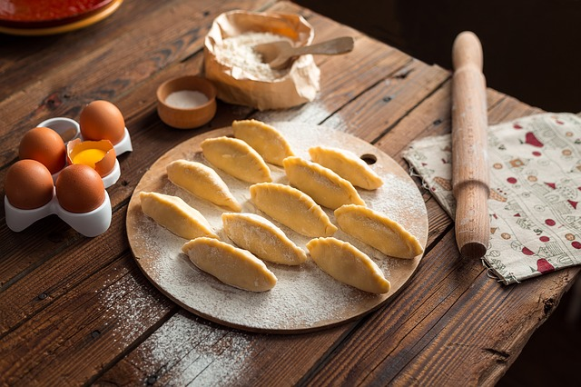

EMPANADAS DE CARNE |
Ingredientes
- 18 tapas de empanadas para horno, tipo criollo.
- O, si se quiere amasar la masa 750 gr. de harina común, una taza de grasa vacuna, sal gruesa, agua hirviendo.
- Un kilo y medio de carne de un corte pulposo: cuadrada, cuadril, bola de lomo.
- 2 cebollas.
- 3 dientes de ajo.
- 1 puñadito de cebollas de verdeo.
- 4 o 5 huevos duros.
- Aceitunas, una taza y media.
- Sal y pimienta.
- Especias: ají molido, pimentón, comino.
- Aceite de oliva, dos o tres cucharadas.
- Una yema de huevo.
|
 |
| Paso a paso |
Para la masa:
- Hacer una pirámide con la harina sobre la mesada, con un hueco en el medio. Preparar una salmuera con el agua hirviendo un dos cucharadas de sal y dejar enfriar un par de minutos. Derretir en una sartén profunda la grasa, dejar enfriar un poco pero sin que solidifique. Echar en el hueco de la harina la grasa y algunas cucharadas de salmuera. Mezclar rápidamente, echar más salmuera si es necesario, hasta lograr unir toda la harina. Trabajar hasta que se enfríe. Queda una masa bastante dura, hay que trabajarla para que gane elasticidad.
- Estirar con palote bien fina, cortar discos con un platito de taza de té o similar. Dejar enfriar.
Para el relleno:
- Cortar la carne a cuchillo en daditos pequeños, o pasar por picadora retirando bien la grasa (pedir al carnicero).
- Picar la cebolla, las cabecitas de la cebolla de verdeo, y el ajo.
- Cortar en juliana los tallos de la cebolla de verdeo.
- Rehogar en una sartén amplia la cebolla, ajo y parte blanca del verdeo con aceite hasta que esté transparene.
- Poner en un bol pequeño una cucharadas de té de pimentón, media de ají molido y dos cucharadas de comino (indispensable). Agregar tres cucharadas de agua fría, mezclar hasta hacer una pasta.
- Agregar la pasta de especias a la cebolla, mezclar bien y dejar que se evapore un poco el líquido.
- Agregar la carne, rehogar revolviendo de vez en cuando. Retirar cuando la carne está cocida pero no seca.
- Probar y rectificar las especias. Es mejor que sobre un poco a que falte condimento.
- Dejar enfriar por lo menos dos horas en la heladera.
- Dejar enfriar por lo menos dos horas en la heladera.
- Rellenar los discos de empanada con una cucharada bien colmada de relleno, una aceituna, un octavo de huevo duro. Poner bastante relleno: una empanada con poco relleno se seca. Sellar bien los bordes y hacer un repulgue.
- Si las empanadas se hacen al horno, pintar con yema y ponerlas en una placa aceitada en horno bien caliente. Sacarlas bien doradas.
- Si se van a freír, hacerlo por tandas en grasa bien caliente en una sartén profunda. Hay que comerlas bien calientes, con vino tinto.
|
|
Inicio
|
ASADO |
Ingredientes
- 1 costillar de tiras anchas (puede ser de tiras finas)
- Matambre de ternera o de cerdo abierto
- Entraña
- Vacio
- Chorizos y morcillas
- Riñones
- Achura
Verduras
- Papa
- Batata
- Cebolla
|
|
| Paso a paso |
- Prender el fuego, con leña o carbón, hacer suficiente para toda la cocción, cuando se hayan formado las brasas, no hagan humo y tenga como un polvillo o ceniza de color blanco o gris, ya están listas para poner extendidas debajo de la carne. Si las brasas están húmedas hacen humo y la carne quedara con sabor ahumado, tal vez esa es el primer requisito para ser un buen asador.
- Hay que limpiar la rejilla de la parrilla antes de poner la carne, con un papel de diario y se saca el polvo o restos de asadosanteriores, se engrasa bien con un pedazo de grasa de la carne que se va hacer.
- Cada corte de carne tiene distintos tiempo de cocción. Si es costillar se pone con el hueso del lado de las brasas y no se dará vuelta hasta casi el final solo para dorar y necesita una hora u hora y media para estar lista. Después ponemos el vacio, la entraña y el matambre si lo hay, los cortes delgados se ponen del lados mas grueso hacia las brasas.
- Si hay riñones se ponen en remojo en vinagre y lavan bien antes de poner en la parrilla, los chinchulines también se lavan y se remojan en vinagre ( se asan hasta que queden bien crujientes y tostados).
- Las verduras, papas y batatas poner directamente sobre las brasas, la cebolla envolver antes en papel de aluminio.
- La cocción del asado tiene que ser lenta y constante, asegurar tener el suficiente fuego para todos los cortes, se asan así para mantener los jugos y no quemar las fibras, la parrilla se pone mas o menos a 15 o 20 cm del fuego si hay poca brasa y si tenemos suficiente fuego entonces poner la parrilla a 30 o 35 cm de ellas y el asado se hará con tiempo y el fuego se reparte mucho mas parejo. También nos resguarda si cae grasa y enciende las brasas. La parrilla ideal para que eso no suceda es la acanalada con inclinación donde la grasa se desliza hasta caer en la canaleta.
- Servir primero las achuras, riñones, chorizos y morcillas. Después los cortes con hueso y por ultimo el resto de la carne, acompañar con la cebolla a las brasas y una ensalada criolla.
- De postre en casa se comen las papas y batatas a la brasas, cortadas al medio con manteca y sal y una cucharita, riquisímas. Y después a disfrutar y un aplauso para el asador.
|
|
Inicio
|
LOCRO |
Ingredientes
- Zapallo – 4500gr
- Maiz blanco pisado – 800gr
- Porotos pallares – 500gr
- Sal – a gusto
- Pimienta – a gusto
- Chorizo colorado – 500gr
- Chorizo puro cerdo – 500gr
- Chuleta de jamon de cerdo – 1500gr
- Tapa de asado – 1500gr
- Panceta salada – 750gr
- Cebolla de verdeo – 2 atados
- Perejil – a gusto
- Ají molido – 6 cucharadas
Para la salsa:
- 200cc de aceite de girasol
- 200gr de grasa bovina
- Cebolla de verdeo cortada fina,
- Ají molido
- Chilli seco
|
|
| Paso a paso |
- Dejar en remojo los porotos y el maíz blanco por 12hs mínimo.
- Cortar el chorizo colorado, la panceta, el chorizo de cerdo, la tapa de asado y la calabaza (previamente pelada) en cubos de 2x2 aprox.
- Pasar a blanquear el chorizo colorado, la panceta, el chorizo de cerdo. Para eso colocar cada producto por separado en una olla con agua fría, dejar que rompa hervor cocinar unos minutos, retirar del fuego y reservar.
- Colocar en una olla los porotos y el maíz previamente escurridos. Cubrir con agua hasta 4 dedos por encima de los porotos. Dejar cocinar por 1:30hs.
- Agregar la panceta, la chuleta, el chorizo de cerdo, chorizo colorado, la tapa de asado, salpimentar y cocinar por 1:15hs mas.
- Luego agregar el zapallo y seguir cocinando hasta que el zapallo se deshaga y espese la preparación. Por ultimo agregar la cebolla de verdeo cortada fina. Corregir sazón y disfrutar.
- SALSA: En una olla calentar el aceite de girasol con la grasa bovina. Agregar cebolla de verdeo cortada fina, ají molido, sal, pimienta, chilli seco. Dejar que rompa hervor, retirar y dejar entibiar.
|